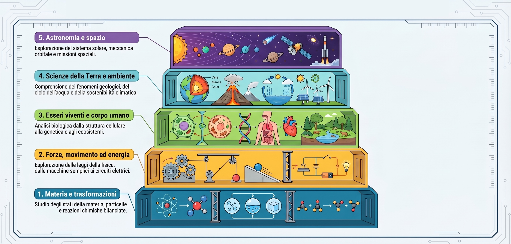

Particelle, stati della materia, miscugli, reazioni
Leve, circuiti elettrici, onde sonore e luminose
Cellula, ecosistemi, genetica mendeliana
Ciclo dell'acqua, vulcani, clima ed effetto serra
Missione Artemis II, orbite, sistema solare